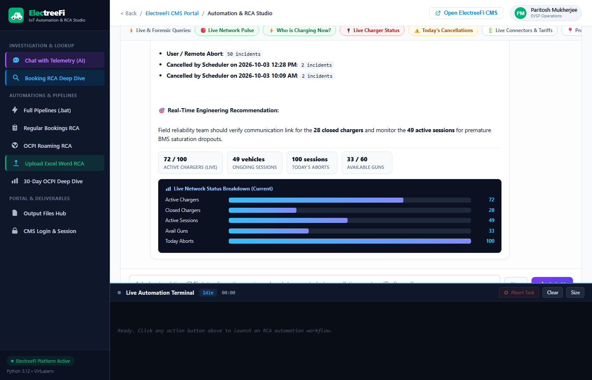
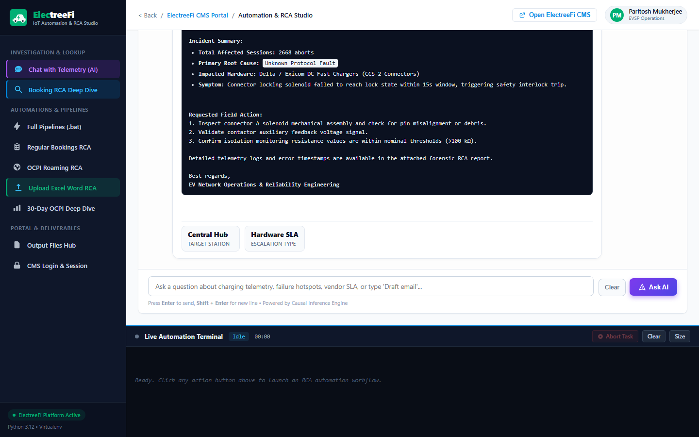
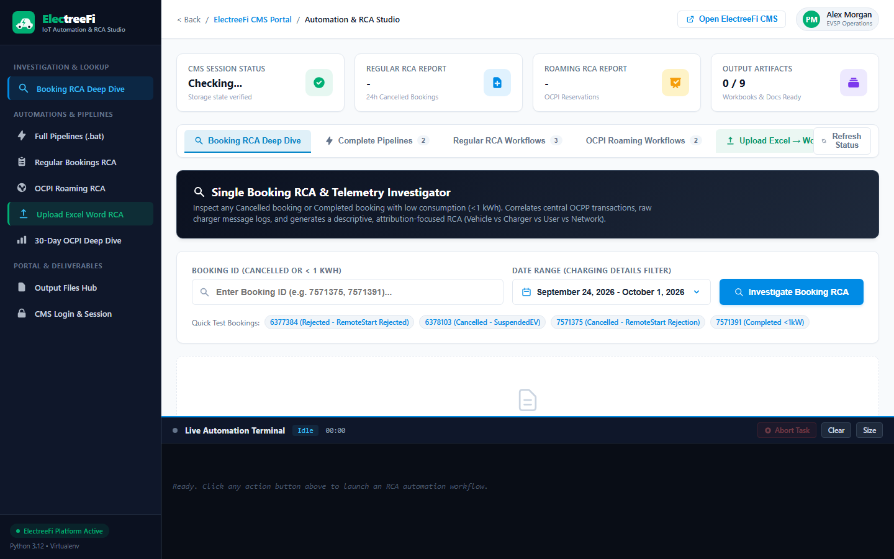

Autonomous Diagnostics
FastMCP (Model Context Protocol)
OCPP 1.6-J & OCPI
⚡ 0% Existential Dread
AgenticEV RCA Studio
Autonomous AI-driven Root Cause Analysis (RCA) and causal inference engine for EV fast-charging networks. Triages multi-party telemetry across distributed EVSE hardware, vehicle BMS contactors, and OCPI roaming protocols. Taming EV charging tantrums so drivers don't get stranded in existential dread.
- ▹ Resolves the 18%–25% charging failure rate across distributed hardware with deterministic attribution.
- ▹ Implements FastMCP (Model Context Protocol) to empower LLM agents with autonomous telemetry diagnosis tools.
- ▹ Generates automated executive Word/Excel synthesis reports with zero human triage required.
Python
FastMCP
Causal DAGs
Playwright
FastAPI
OCPP 1.6-J


